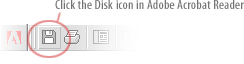

Download ECN.Communicator User Manual
|
|
Word Format (8.08 MB) |
|
| PDF Format (888 KB) | |||
| To view your document, you must have Adobe Acrobat Reader. | |||
To save
your Adobe PDF file, click the Save icon on the Adobe Acrobat Reader
toolbar. |
|||
 |
|||
Note:
If you see a browser error message indicating "there is no
viewer available" or regarding the MIME type "application/pdf,"
please do the following: Right-click (Windows) or Ctrl-click (Mac
OS) the link to the PDF file, choose Save Link As from the pop-up
menu, and save the PDF file to your hard disk. You can then open
the downloaded file using Adobe Acrobat Reader. |
|||